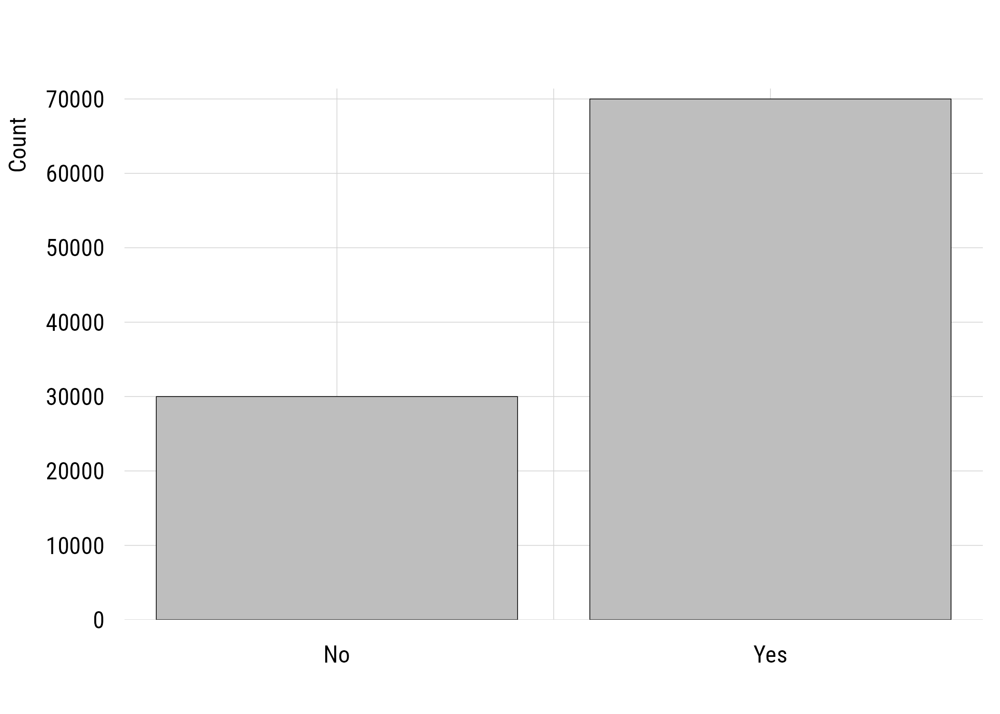
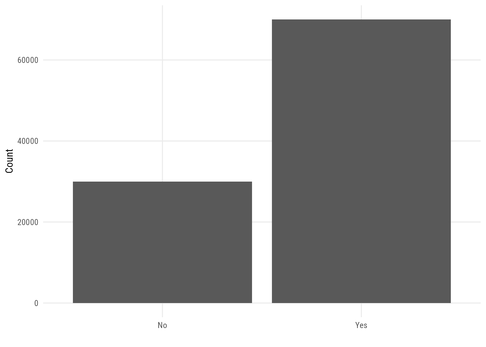
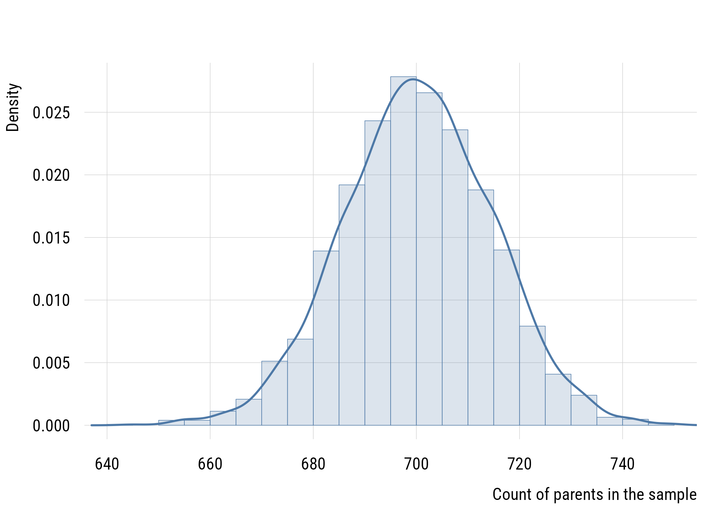
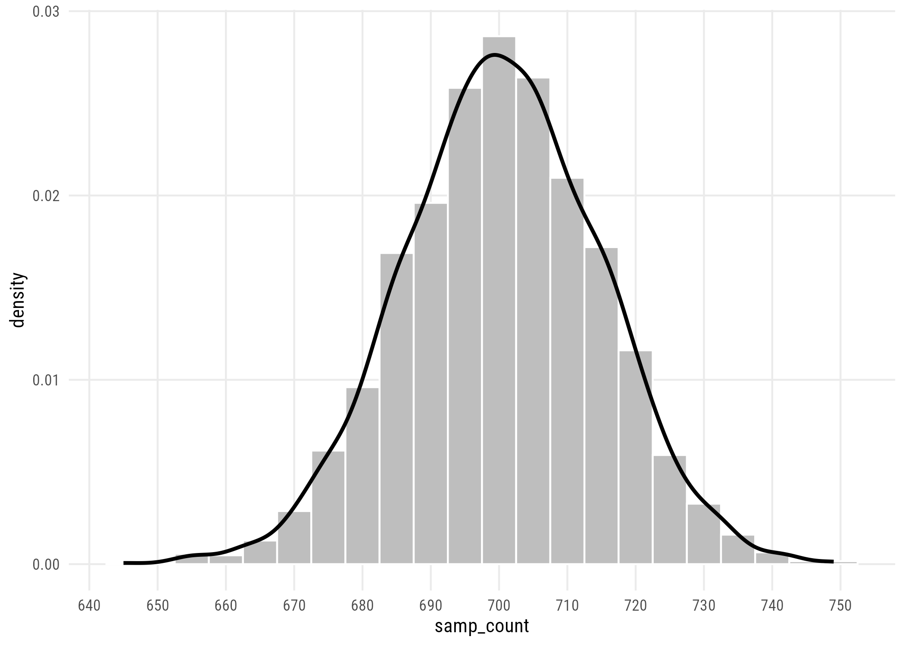
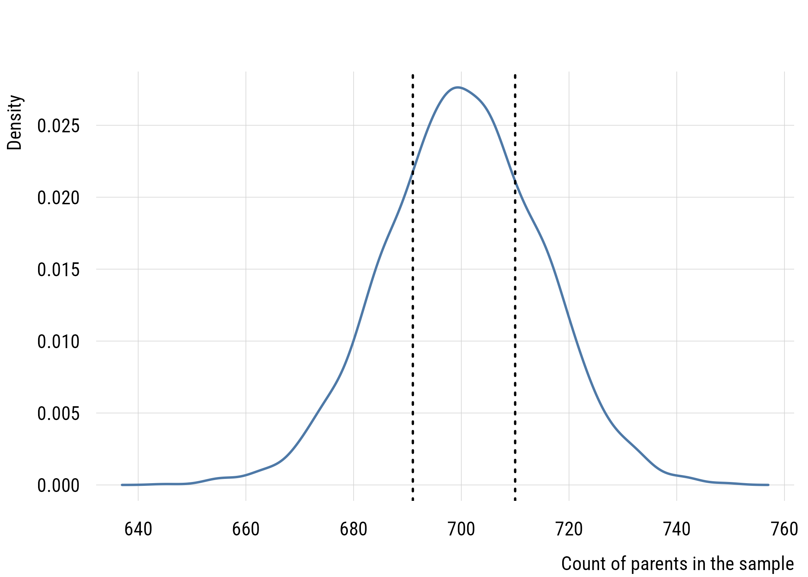
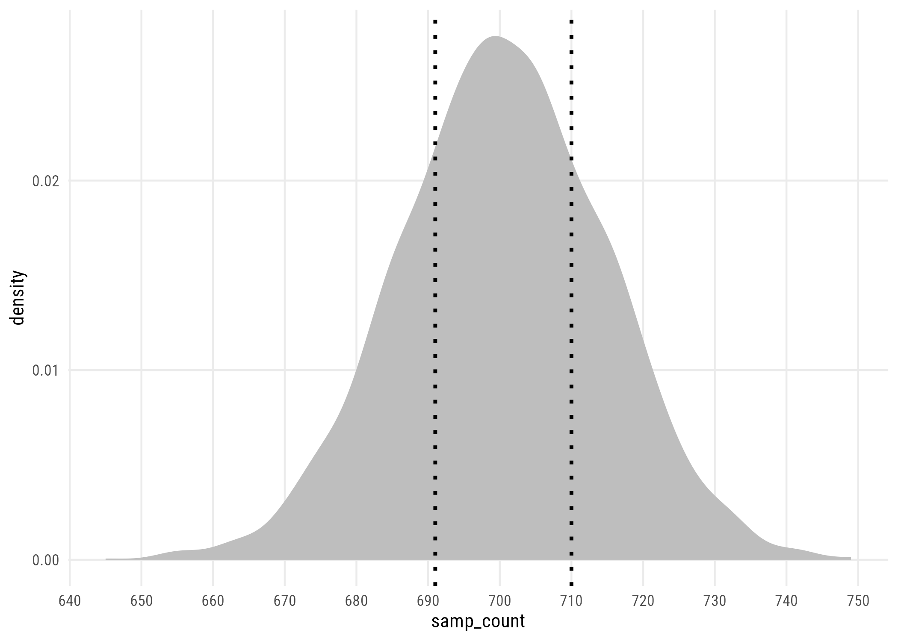
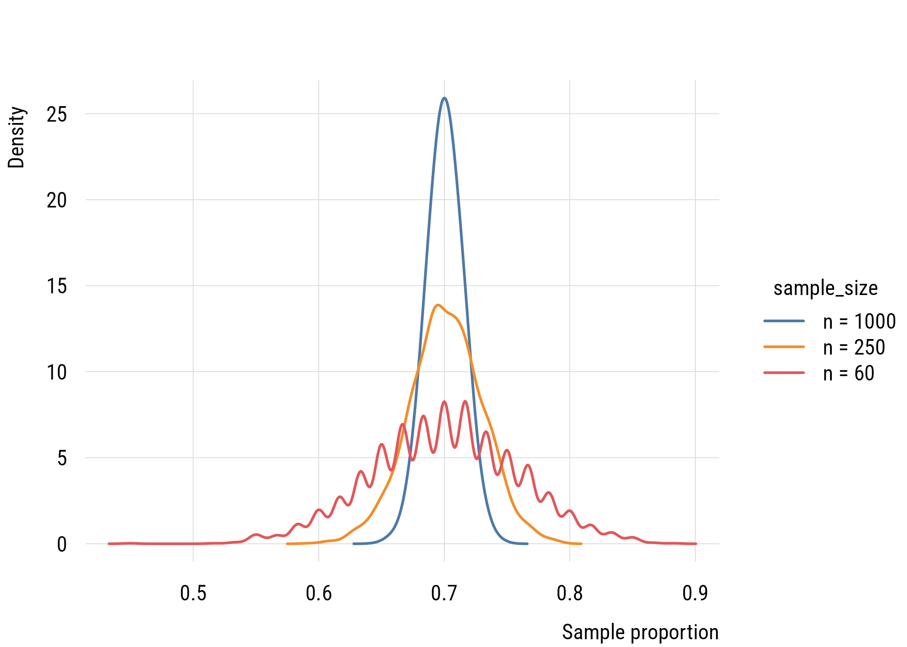
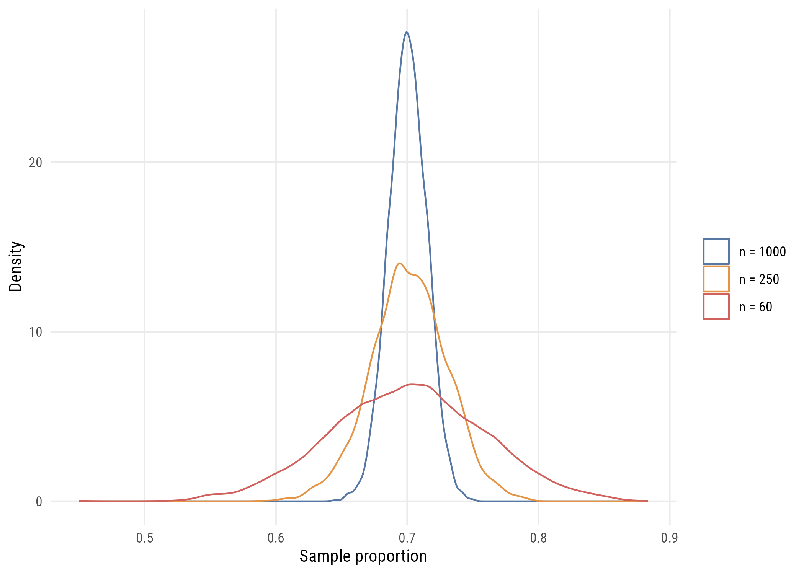
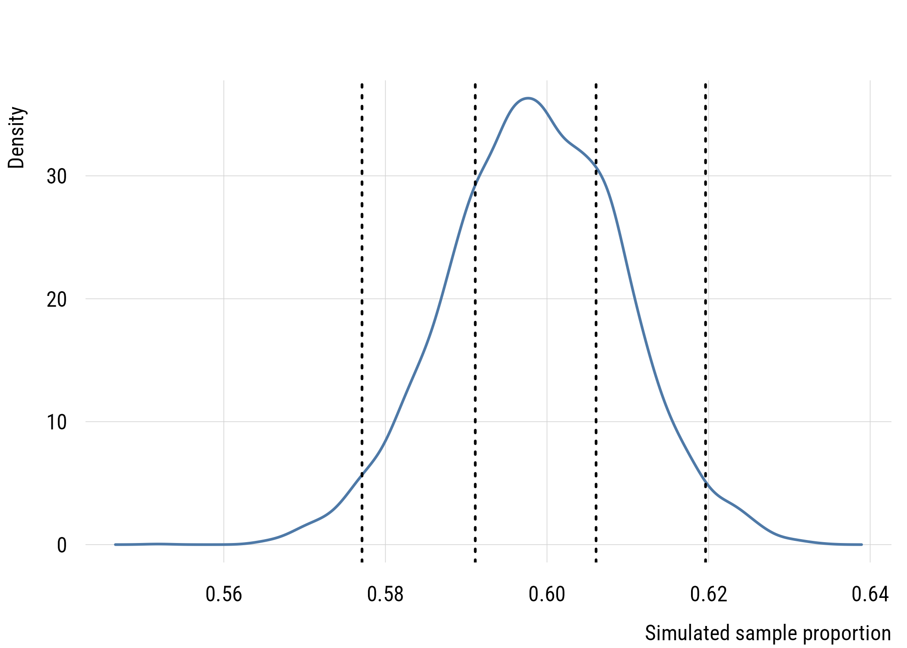
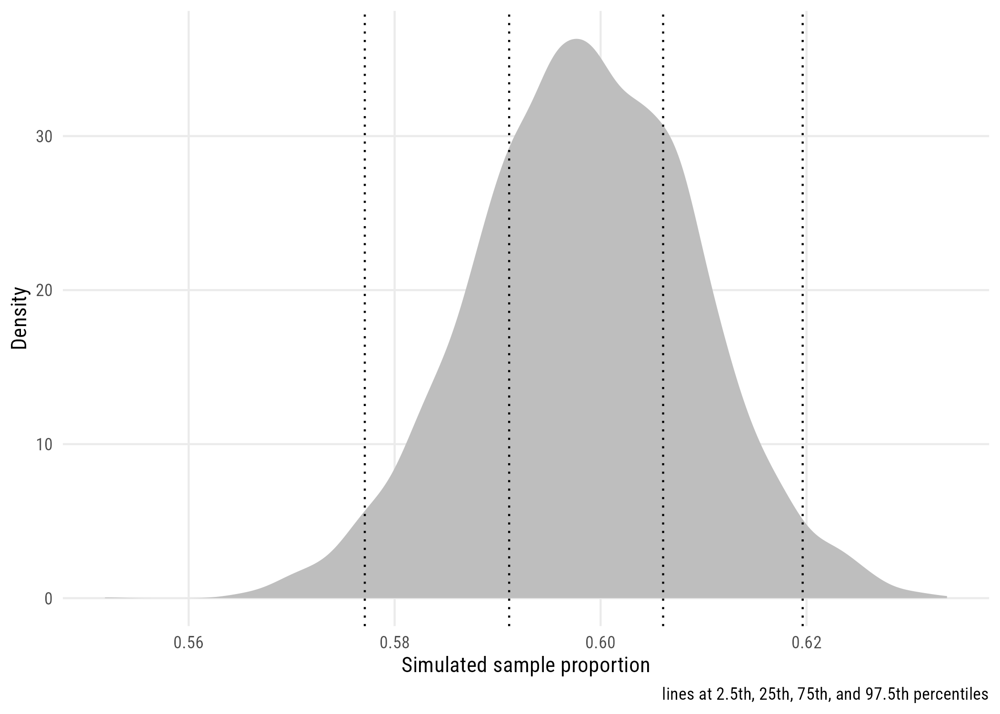

population <- tibble(id = 1:1e5) |> # initialize with 100K rows
mutate(parent = if_else(id <= 70000, "Yes", "No")) # first 70K "yes"2 Surveys and samples
2.1 Populations and samples
Studying populations is nice:
- all countries in the world
- all states in the US
- all cities in a state
However, we cannot study (say) all adults in a country. So we usually work with samples. This raises the issue of using samples to make inferences about populations.
2.1.1 Simple random sampling
Sampling where every eligible case has an equal probability of selection.
Note
In real-life surveys, simple random sampling is pretty uncommon. But it’s important as a baseline! The GSS uses a clustered, stratified, multi-stage design, because knocking on randomly scattered doors across a continent is prohibitively expensive. We will treat samples as simple random samples throughout this book. The intuitions transfer; the formulas need adjusting.
2.2 Simulations
We can use simulations to build intuition about sampling.
A simulation is when we make up “true data”, hide it from ourselves, and see how well we can figure out the truth using some procedure.
2.2.1 A simple survey
Imagine a city of 100,000 adults. Of these, 70,000 (i.e., 70%) have at least one child.
How close could we get to this number by drawing different random samples?
Let’s set up the “true” population:
This simple code makes the first 70,000 rows “yes” and the next 30,000 “no.” We now know the “truth”, which we can use for comparison.
Show code
plt(~ parent, data = population, type = "bar", xlab = "", ylab = "Count")
Show code
ggplot(population, aes(x = parent)) +
geom_bar() +
labs(x = "", y = "Count")
2.2.2 Data types
Because of the way we created it, parent will be a character <chr> variable. We often use 1 to mean “yes” and 0 to mean “no” in statistics. We could add a numeric version of parent as follows.
population <- population |>
mutate(parent_num = if_else(parent == "Yes", 1L, 0L))
Tip
Assigning an object to its “old” name allows you to add things to the original object. In this case, we are adding a new column, parent_num.
We can use glimpse() to easily see what type of variable things are.
glimpse(population)Rows: 100,000
Columns: 3
$ id <int> 1, 2, 3, 4, 5, 6, 7, 8, 9, 10, 11, 12, 13, 14, 15, 16, 17, ~
$ parent <chr> "Yes", "Yes", "Yes", "Yes", "Yes", "Yes", "Yes", "Yes", "Ye~
$ parent_num <int> 1, 1, 1, 1, 1, 1, 1, 1, 1, 1, 1, 1, 1, 1, 1, 1, 1, 1, 1, 1,~
Tip
glimpse() is very useful. It shows you your data “sideways” so you can see information about all the columns (which are shown as rows).
Data type affects what we can do to a variable (or column). For example, we can take the mean (average) of a set of numbers but we can’t take the mean of a set of characters.
population |>
summarize(mean1 = mean(parent),
mean2 = mean(parent_num))Warning: There was 1 warning in `summarize()`.
i In argument: `mean1 = mean(parent)`.
Caused by warning in `mean.default()`:
! argument is not numeric or logical: returning NA# A tibble: 1 x 2
mean1 mean2
<dbl> <dbl>
1 NA 0.7
Note
In R, NA stands for “not available” and means that the data are missing. This cell is missing because what we asked for couldn’t be calculated.
NoteAside: doing stuff to a variable
We can pick out a column to operate on in two ways.
Tidyverse:
population |>
pull(parent_num) |>
mean()[1] 0.7Base R:
mean(population$parent_num)[1] 0.7Now back to our story…
2.3 Parameters and statistics
In our city, 70% is the population parameter because exactly 70,000 out of 100,000 people actually have at least one child.
We can’t afford to ask everyone, though. So what if we asked, say, 1000 randomly selected adults. Then we could compute the proportion of the sample that has a child. This would be a sample statistic. We use sample statistics to make inferences about population parameters.
This is the Roman-and-Greek distinction from Chapter 1, now with a purpose. The population mean \(\mu\) is a parameter; the sample mean \(\bar{x}\) is a statistic. For proportions, the population proportion is \(p\) and the sample proportion is \(\hat{p}\), or “p-hat,” where the hat means “estimated from data.”
2.3.1 Drawing a sample
set.seed(722)
my_sample <- population |>
slice_sample(n = 1000,
replace = FALSE)Sampling is a random process. We will get a different result every time. By using set.seed(), we ensure we get the same “random” result every time the code is run.
Note
Sampling theory is based on sampling with replacement. However, to make it more straightforward, we will use sampling without replacement here.
2.3.2 The sample statistic
To estimate the population proportion, we will use the sample proportion.
my_sample |>
group_by(parent) |>
summarize(n = n())# A tibble: 2 x 2
parent n
<chr> <int>
1 No 318
2 Yes 682In our sample, 682 people are parents. This is 68.2%, which isn’t exactly the 70% in the population. This is because we randomly sampled from our population. It could be higher or lower.
2.4 Repeating the experiment
In real life, we only get to sample once. Sampling is expensive! But since this is just a simulation, we can ask what would happen if we sampled 1000 people many, many times.
2.4.1 A custom function
We can first make a function that does what we want once. This is hard at first but usually pays off.
get_count <- function(n = 1000) { # default n = 1000
slice_sample(population, n = n) |> # take a sample
summarize(sum = sum(parent_num)) |> # count the parents
as.integer() # save the number
}
Tip
If you run all the code up to here, you can call get_count() interactively in the console many times to get a feel for it.
2.4.2 Iterating
This would seem to make sense, but it doesn’t work.
set.seed(722)
my_bad_samples <- tibble(
sample_id = 1:100,
samp_count = get_count(n = 1000))
head(my_bad_samples)# A tibble: 6 x 2
sample_id samp_count
<int> <int>
1 1 682
2 2 682
3 3 682
4 4 682
5 5 682
6 6 682Every row is identical. mutate() and tibble() are vectorized: they call get_count() once and copy the answer down the column. What we want is for the function to run once per row.
2.4.3 Iterating with rowwise()
set.seed(722)
my_samples <- tibble(
sample_id = 1:100) |>
rowwise() |>
mutate(samp_count = get_count(n = 1000))
head(my_samples, n = 3)# A tibble: 3 x 2
# Rowwise:
sample_id samp_count
<int> <int>
1 1 682
2 2 716
3 3 694
Tip
I don’t need n = 1000 because I set it as the default when I made my function.
2.4.4 Plotting the results
set.seed(722)
my_many_samples <- tibble(
sample_id = 1:2500) |>
rowwise() |>
mutate(samp_count = get_count())Show code
plt(~ samp_count, data = my_many_samples, type = "hist",
freq = FALSE, breaks = seq(600, 800, 5),
xlab = "Count of parents in the sample", ylab = "Density")
plt_add(~ samp_count, data = my_many_samples, type = "density", lwd = 2)
Show code
ggplot(my_many_samples, aes(x = samp_count)) +
geom_histogram(aes(y = after_stat(density)), # for overlay
boundary = 697.5, # why would I choose this?
binwidth = 5, # somewhat arbitrary
color = "white",
fill = "gray") +
scale_x_continuous(breaks = seq(600, 800, 10)) +
geom_density(linewidth = 1) # overlay density
WarningSample size and number of samples
When we are doing simulations like this, it can be easy to confuse the sample size (1000) with the number of samples in our simulation (2500). They are not the same thing!
The sample size is the number of people we would survey “in the real world”.
The number of samples is how many times we want to run our simulated experiment.
2.4.5 How accurate are we?
We will do this formally later. But now we can quantify how accurately a sample proportion of 1000 people might estimate this population proportion by using the interquartile range. This is how wide the middle half of the data is.
my_many_samples |> pull(samp_count) |> quantile(c(.25, .75))25% 75%
691 710 my_many_samples |> pull(samp_count) |> IQR()[1] 19
TipReminder
Remember: in real life we only get one of these samples.
Show code
plt(~ samp_count, data = my_many_samples, type = "density", lwd = 2,
xlab = "Count of parents in the sample", ylab = "Density")
abline(v = quantile(my_many_samples$samp_count, c(.25, .75)), lty = 3, lwd = 2)
Show code
ggplot(my_many_samples, aes(x = samp_count)) +
geom_density(fill = "gray", color = NA) +
scale_x_continuous(breaks = seq(600, 800, 10)) +
geom_vline(xintercept = quantile(my_many_samples$samp_count, c(.25, .75)),
linetype = "dotted", linewidth = 1)
2.5 Sample size
Remember that we drew a sample of 1000 people to estimate our sample proportions. What if we had different sample sizes? Let’s compare the following:
- \(n\) = 60
- \(n\) = 250
- \(n\) = 1000
Data prep
set.seed(722)
my_n60_samples <- tibble(
sample_id = 1:2500,
sample_size = "n = 60") |>
rowwise() |>
mutate(samp_count = get_count(n = 60),
samp_prop = samp_count / 60) # proportion
my_n250_samples <- tibble(
sample_id = 1:2500,
sample_size = "n = 250") |>
rowwise() |>
mutate(samp_count = get_count(n = 250),
samp_prop = samp_count / 250)
my_many_samples <- my_many_samples |> # adding the group var and prop
mutate(sample_size = "n = 1000",
samp_prop = samp_count / 1000)
samp_size_compare <-
bind_rows(my_n60_samples,
my_n250_samples,
my_many_samples)Show code
plt(~ samp_prop | sample_size, data = samp_size_compare, type = "density",
lwd = 2, xlab = "Sample proportion", ylab = "Density")
Show code
ggplot(samp_size_compare,
aes(x = samp_prop, group = sample_size, color = sample_size)) +
geom_density() +
labs(x = "Sample proportion", y = "Density", color = "")
TipProportions
The x-axis is now proportion because we can no longer compare raw counts.
The interquartile ranges (i.e., widths of the middle half of the data) decrease a lot with sample size.
samp_size_compare |>
group_by(sample_size) |>
summarize(IQR = IQR(samp_prop))# A tibble: 3 x 2
sample_size IQR
<chr> <dbl>
1 n = 1000 0.0190
2 n = 250 0.0360
3 n = 60 0.0667
Warning
We will explore these issues more formally very soon using the concepts sampling distribution and standard error. For now, the goal is to understand how to use simulations to build qualitative intuition about sample size.
Notice the rate. Each of those sample sizes is roughly four times the one before, and each IQR is roughly half the one before. Precision improves with the square root of sample size, so quadrupling the sample halves the spread. Halving your uncertainty costs four times as many interviews, which is why national surveys settle around one or two thousand respondents rather than ten thousand.
NoteBias is not the same as noise
All three distributions above are centered on 0.7. Sample size does not make an estimate less biased. A small random sample is already unbiased. A biased sample is off-center, and no sample size fixes it. These are different problems with different remedies, and the second is much worse.
2.6 Thinking with real data: GSS
The General Social Survey is a repeated cross-sectional survey that has been fielded every year or other year since 1972. It is the “Hubble Telescope” of sociology!
You built the file we are about to read in the setup chapter.
gss2024 <- readRDS(here::here("data", "gss2024.rds")) |>
haven::zap_labels()2.6.1 Introducing abany
The GSS abany item asks “Please tell me whether or not you think it should be possible for a pregnant woman to obtain a legal abortion if the woman wants it for any reason?” The answers are “yes” (1) and “no” (2).
Warning
We do not want variables coded 1 and 2. As we will see later, it’s better if (almost) all variables have a meaningful 0 value.
d <- gss2024 |>
select(abany)
d |> group_by(abany) |>
summarize(n = n())# A tibble: 3 x 2
abany n
<dbl> <int>
1 1 1281
2 2 859
3 NA 1169d <- d |>
drop_na() |> # drop NA values
mutate(abany = if_else(abany == 1, 1, 0))
d |> pull(abany) |> table()
0 1
859 1281 2.6.2 abany sample proportion
We can use mean() to calculate the sample proportion.
mean(d$abany)[1] 0.5985981We find that 59.9% of our sample supports abortion rights for any reason.
2.6.3 Inference
How close is this sample statistic to the population parameter? We’ll never know.
We can use a simulation to give us a sense of what kind of accuracy is possible with a sample of 2140 respondents.
We could build an imaginary US adult population where 59.9% of adults support abortion rights. But we can instead use random number functions to draw a sample from an infinite population instead.
set.seed(722)
rbinom(n = nrow(d), size = 1, prob = mean(d$abany)) |> # sample from inf. pop.
mean() # take the mean[1] 0.5682243
TipWhy that value?
Why assume that the population parameter is the sample proportion? Because we are interested in how widely spread the simulations are and there isn’t a more reasonable value to choose.
Let’s do this 5000 times and collect the results.
set.seed(722)
gss_sims <- tibble(
sim_id = 1:5000) |>
rowwise() |>
mutate(samp_prop = mean(rbinom(nrow(d), 1, mean(d$abany))))The IQR tells us how spread out the middle half of the estimates are.
gss_sims |> pull(samp_prop) |> IQR()[1] 0.01495327Thus, with 2140 cases, half of the sample proportions will be within approximately 0.7 points of the true value.
Show code
plt(~ samp_prop, data = gss_sims, type = "density", lwd = 2,
xlab = "Simulated sample proportion", ylab = "Density")
abline(v = quantile(gss_sims$samp_prop, c(.025, .25, .75, .975)),
lty = 3, lwd = 2)
Show code
ggplot(gss_sims, aes(x = samp_prop)) +
geom_density(fill = "gray", color = NA) +
geom_vline(xintercept = quantile(gss_sims$samp_prop, c(.025, .25, .75, .975)),
linetype = "dotted") +
labs(x = "Simulated sample proportion", y = "Density",
caption = "lines at 2.5th, 25th, 75th, and 97.5th percentiles")
We still don’t know the true value, of course. We are probably within a couple of points of the true value. But we could be 3 (or possibly more) points away.
WarningWhat this does and does not tell you
The simulation also assumes simple random sampling from a population that answers honestly, and that everyone selected responded. All three are false to some degree in every real survey. Sampling noise is the smallest of the problems with survey data. It is simply the one we can compute.
2.7 Recap
- we want to know about populations
- we end up having to use samples
- samples are random subsets of the population that are expensive to collect
- the larger the sample, the more accurately we can infer the population proportion
- we can use simulations to understand how this works
Chapter 5 gives the object we have been drawing a name (the sampling distribution) and derives its spread analytically, without simulating anything.